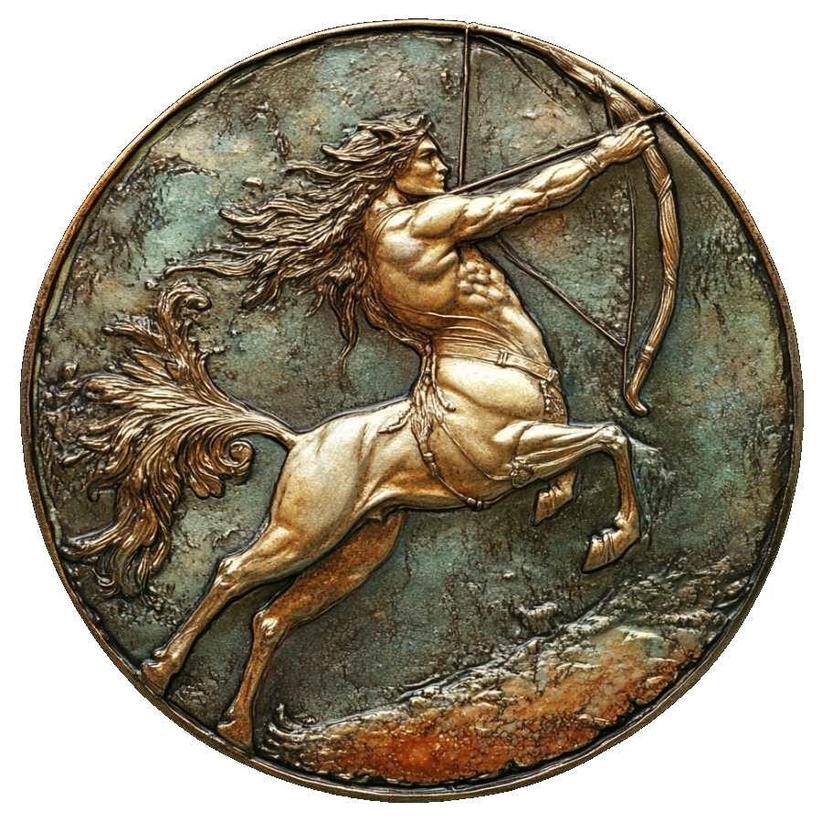

independent multimuse roleplaying blog
characters and lore based on the world of darkness

The Sagittarius Society


In the heart of mystic camaraderie, the Sagittarius Society thrives—a constellation of supernatural allies, all born beneath the same zodiac sign, united by fate and shared purpose. Their connection transcends the mundane as they communicate through enchanted mirrors, crafting a network of magical communication that binds their destinies. Each member, bearing the celestial imprint of Sagittarius, shares a common quest: to recover this shriveling World of Darkness through gathering arcane knowledge, the exploration of spaces and ideas that are foreign, the healing and protection of people that are unable to help themselves, to rebel against the opressive forces that smother the land and it's inhabitants, and the delivery of the most precious, and scarce, value in this universe: Hope.❧
The Sagittarius Society are the main characters of this blog. The Society follows different objectives depending on the need of the plot, however, some remain very constant: you can expect them to travel to different destinations, to explore places, ideas and situations that they have not lived before until they are satisfied, to engage in mental stimulation whether by curiosity or obligation, to teach others what they have learned in the past, to heal others through their own experience, sometimes even protecting them, and to rebel and oppose the forces of authority.
For the most part, it is a secret society whithin a secret society. Each character, being a different Night Folk from the World of Darkness, offers their own unique abilities to the plots which are listed on their own page. They are also joined by a signature motif which is a recurrent element in their plots.
Characters are categorized depending on the level of constancy and work I have done for them:
For the most part, it is a secret society whithin a secret society. Each character, being a different Night Folk from the World of Darkness, offers their own unique abilities to the plots which are listed on their own page. They are also joined by a signature motif which is a recurrent element in their plots.
Characters are categorized depending on the level of constancy and work I have done for them:
- Core characters are those who I will always have inspiration and I have worked for a long time on their creation. They contain their own separate page.
- Secondary characters are not fully developed, but they have appeared on different stories and Chronicles, which gives them a bit of fleshing out.They contain their own separate page.
- Other characters are concepts that I have created but haven't fully develop. Perhaps one day they will be updated to Secondary or Core characters.
- Bottoms are rarely fleshed out because it's not a position I tend to play often.
Tops
Bottoms


core
secondary
other